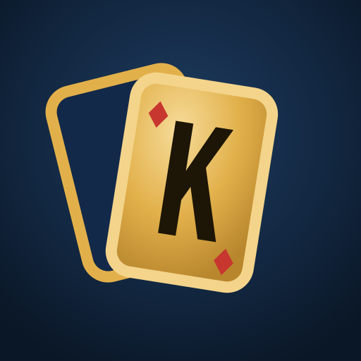

KOPOConditions d'utilisation
Version du 31 octobre 2026
1. Qui édite le Kopo
Le Kopo est un jeu de cartes en ligne édité à titre personnel par Rossy Mundyo Busyo, République démocratique du Congo. Contact : mundyo76@gmail.com.
Le serveur du jeu est hébergé par Render Services, Inc. (San Francisco, États-Unis), sur des machines situées à Francfort (Allemagne). La page du jeu est hébergée par GitHub, Inc. (San Francisco, États-Unis).
2. Accepter ces conditions
En jouant au Kopo, tu acceptes ces conditions et la politique de confidentialité. Si tu n'es pas d'accord, n'utilise pas le jeu.
3. Âge
- Il faut avoir au moins 13 ans pour jouer.
- Les achats (quand ils existeront) sont réservés aux personnes majeures, ou aux mineurs avec l'accord d'un parent.
4. Ton compte
- Tu peux jouer en invité, puis relier ton compte à Google pour le retrouver sur un autre appareil. Un compte Google ne peut être relié qu'à un seul compte Kopo.
- Un seul compte par personne. Les comptes créés pour récupérer plusieurs fois les cadeaux peuvent être supprimés.
- Ton pseudo est unique et en un seul mot. Il ne doit être ni insultant, ni haineux, ni se faire passer pour quelqu'un d'autre (y compris pour l'équipe du Kopo). Nous pouvons changer un pseudo qui ne respecte pas ces règles.
- Tu es responsable de ce qui se passe avec ton compte. Si tu penses que quelqu'un d'autre l'utilise, écris-nous.
- Tu peux supprimer ton compte à tout moment dans Paramètres → Compte, ou en suivant ces indications sans ouvrir le jeu.
5. Les pièces
- Les pièces sont une monnaie virtuelle, utilisable uniquement dans le jeu. Elles n'ont aucune valeur en argent. Tu ne possèdes pas les pièces : tu as seulement le droit de les utiliser dans le jeu, selon ces conditions.
- Elles ne peuvent être ni retirées, ni échangées, ni vendues, ni données à un autre joueur, que ce soit dans le jeu ou en dehors.
- Le Kopo ne permet jamais de gagner de l'argent réel ni aucun lot ayant une valeur en argent. Les pièces gagnées à une table servent seulement à continuer de jouer et à personnaliser ton jeu.
- Pendant la phase d'essai, les pièces sont des « pièces d'essai » qui seront remises à zéro au lancement officiel.
- Nous pouvons corriger un solde en cas d'erreur technique, de triche ou d'abus.
6. Les achats (quand ils existeront)
- Les achats porteront sur des pièces ou des objets précis, à prix affiché toutes taxes comprises avant de payer, sans tirage au hasard payant.
- Le paiement passe par la boutique de ton appareil (par exemple Google Play). Ses règles de paiement et de remboursement s'appliquent en plus des nôtres.
- Ce que tu achètes est livré tout de suite dans ton compte. Si la loi de ton pays te donne un délai de rétractation, tu acceptes, en confirmant l'achat, que la livraison commence immédiatement et tu renonces ainsi à ce délai, dans la mesure où la loi le permet.
- Si un achat n'est pas arrivé ou a été débité deux fois, écris-nous avec la preuve de paiement : nous livrerons ce qui manque ou t'aiderons à obtenir le remboursement.
- Si tu supprimes ton compte, ou s'il est banni pour une faute grave (voir l'article 7), les pièces et objets qu'il contient sont perdus, même achetés, sauf si la loi en décide autrement.
7. Bien se comporter
Sont interdits :
- les insultes, menaces, propos haineux ou harcèlement, au micro comme dans les pseudos ;
- la triche : logiciels, entente entre joueurs pour faire gagner quelqu'un, exploitation d'un bug ;
- le fait de quitter les parties à répétition pour gêner les autres ;
- la revente de comptes ou de pièces ;
- toute tentative d'attaquer ou de surcharger le serveur du jeu.
Tu peux signaler ou bloquer un joueur. Nous examinons les signalements. Selon la gravité, nous pouvons avertir, couper le micro, suspendre ou bannir un compte, sans compensation.
Contester une sanction : écris à mundyo76@gmail.com dans les 30 jours avec ton pseudo et ton numéro (#1234). Nous réexaminons la décision et te répondons sous 15 jours.
8. Le micro
Le micro est facultatif et coupé par défaut. Le son passe directement entre les téléphones des joueurs de la table. Nous ne l'enregistrons pas. Chaque joueur peut couper le son des autres. Tu es responsable de ce que tu dis au micro.
9. Le service
Nous faisons de notre mieux pour que le jeu fonctionne, sans pouvoir le garantir en permanence (pannes, maintenance, réseau). Nous pouvons faire évoluer le jeu, ses règles et ses récompenses. Une partie interrompue par une panne peut ne pas être comptée.
Si nous décidons d'arrêter le Kopo, nous te prévenons dans le jeu au moins 30 jours avant, et nous arrêtons les ventes dès cette annonce.
10. Responsabilité
Le Kopo est un jeu gratuit (les achats seront facultatifs), fourni « tel quel ». Dans la limite permise par la loi, l'éditeur n'est pas responsable des pertes indirectes (perte de pièces virtuelles à la suite d'une panne, coût de ta connexion, problèmes de ton appareil ou de ton réseau), ni des propos ou du comportement des autres joueurs.
Rien dans ces conditions ne te prive des droits que la loi de ton pays t'accorde et auxquels on ne peut pas renoncer.
11. Propriété
Le nom Kopo, le logo, les illustrations, les icônes et le code du jeu appartiennent à l'éditeur, sauf les bibliothèques libres utilisées par le jeu, qui restent soumises à leur propre licence. Tu ne peux pas les copier ou les réutiliser sans autorisation.
12. Fin de l'utilisation
Tu peux arrêter de jouer et supprimer ton compte quand tu veux. Nous pouvons fermer un compte qui ne respecte pas ces conditions (voir l'article 7), ou un compte invité resté inutilisé pendant plus d'un an.
13. Changements
Ces conditions peuvent évoluer. La date en haut de la page indique la dernière version. En cas de changement important, nous te prévenons dans le jeu avant qu'il s'applique. Si tu continues à jouer, tu acceptes la nouvelle version.
14. Droit applicable et litiges
Ces conditions sont soumises au droit de la République démocratique du Congo, sans te priver des protections obligatoires du pays où tu vis. En cas de désaccord, écris-nous d'abord : nous chercherons une solution à l'amiable dans les 30 jours. Faute d'accord, le tribunal compétent sera celui que prévoit la loi.
15. Divers
Si une partie de ces conditions est jugée non valable, le reste continue de s'appliquer. Le fait de ne pas appliquer une règle une fois ne nous empêche pas de l'appliquer plus tard. La version française de ces conditions fait foi.